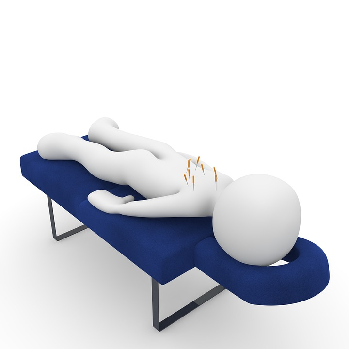

Yantramattan is an acupressure mat. It’s is simply a mat with stimulation points, where you lay on. It has its origin in the ancient Chinese medicine. It has been of big help to me with my neck pain. I have many times experienced intense muscle pain, not being able to move my head to one side. These conditions where occurring often to me, and lasted from 4 to 7 days. When I started using the Yantramattan my neck was pain free within 2-3 days! It can also be used for pain or tension relief on your back or shoulders, as a headache relief, stress relief, energy booster and sleep improvement.
There are many ways of using the Yantramattan.
The most popular is laying on your back. You can also lay on
your belly,
on your side or
even stand on it.
You can find this image on https://pixabay.com/static/uploads/photo/2015/10/31/12/30/massage-1015571_960_720.jpg.
